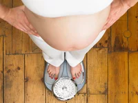
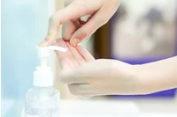

24 Tips for a Healthy Pregnancy
1 of 24
Staying Healthy During Pregnancy
If you're pregnant or thinking about getting pregnant, you probably know some of the basic pregnancy advice about taking care of yourself and the baby: don't smoke or be around secondhand smoke, don't drink, and get your rest.
Here are more pregnancy tips, from taking vitamins to what to do with the kitty litter, that can help ensure safe and healthy prenatal development.
2 of 24
Take a Prenatal Vitamin
Even when you're still trying to conceive, it's smart to start taking prenatal vitamins. Your baby's neural cord, which becomes the brain and spinal cord, develops within the first month of pregnancy, so it's important you get essential nutrients – like folic acid, calcium, and iron – from the very start.
Prenatal vitamins are available over the counter at most drug stores, or you can get them by prescription from your doctor. If taking them makes you feel queasy, try taking them at night or with a light snack. Chewing gum or sucking on hard candy afterward can help, too.
Prenatal vitamins are available over the counter at most drug stores, or you can get them by prescription from your doctor. If taking them makes you feel queasy, try taking them at night or with a light snack. Chewing gum or sucking on hard candy afterward can help, too.
3 of 24
Exercise
Staying active is important for your general health and can help you reduce stress, control your weight, improve circulation, boost your mood, and sleep better. Take a pregnancy exercise class or walk at least 15-20 minutes every day at a moderate pace, in cool, shaded areas or indoors in order to prevent overheating.
Pilates, yoga, swimming, and walking are also great activities for most pregnant women, but be sure to check with your doctor first before starting any exercise program. Aim for 30 minutes of exercise most days of the week. Listen to your body, though, and don't overdo it.
Pilates, yoga, swimming, and walking are also great activities for most pregnant women, but be sure to check with your doctor first before starting any exercise program. Aim for 30 minutes of exercise most days of the week. Listen to your body, though, and don't overdo it.
4 of 24
Write a Birth Plan
Determined to have a doula? Counting on that epidural? Write down your wishes and give a copy to everyone involved with the delivery. According to the American Pregnancy Association, here are some things to consider when writing your birth plan: Here are more pregnancy tips, from taking vitamins to what to do with the kitty litter, that can help ensure safe and healthy prenatal development.
- Who you want present, including children or siblings of the baby
- Procedures you want to avoid
- What positions you prefer for labor and delivery
- Special clothing you'd like to wear
- Whether you want music or a special focal point
- Whether you want pain medications, and what kind
- What to do if complications arise
- Who you want present, including children or siblings of the baby
- Procedures you want to avoid
- What positions you prefer for labor and delivery
- Special clothing you'd like to wear
- Whether you want music or a special focal point
- Whether you want pain medications, and what kind
- What to do if complications arise
5 of 24
Educate Yourself
Even if this isn't your first baby, attending a childbirth class will help you feel more prepared for delivery. Not only will you have the chance to learn more about childbirth and infant care, but you can ask specific questions and voice any concerns. You'll also become more acquainted with the facility and its staff.
Now is also a good time to brush up on your family's medical history. Talk to your doctor about problems with past pregnancies, and report any family incidences of birth defects.
Now is also a good time to brush up on your family's medical history. Talk to your doctor about problems with past pregnancies, and report any family incidences of birth defects.
6 of 24
Practice Kegels
Kegel exercises strengthen the pelvic floor muscles, which support your bladder, bowels, and uterus. Done correctly, this simple exercise can help make your delivery easier and prevent problems later with incontinence. The best part: No one can tell you're doing them, so you can practice kegels in the car, while you're sitting at your desk, or even standing in line at the grocery store. Here's how to do them right:
- Practice squeezing as though you're stopping the flow of urine when you use the bathroom
- Hold for three seconds, then relax for three
- Repeat 10 times
- Practice squeezing as though you're stopping the flow of urine when you use the bathroom
- Hold for three seconds, then relax for three
- Repeat 10 times
7 of 24
Eliminate Toxins
Because of their link to birth defects, miscarriage, and other problems, you should avoid tobacco, alcohol, illicit drugs, and even solvents such as paint thinners and nail polish remover while pregnant. Smoking cigarettes, for example, decreases oxygen flow to your baby; it's linked to preterm birth and other complications. "If you can't stop smoking, drinking, or using drugs, let your doctor know," recommends Roger Harms, M.D., an Ob-Gyn at the Mayo Clinic. A doctor can offer advice and support, as well as refer you to a program that helps pregnant women stop smoking.
8 of 24
Change Up Chores
Even everyday tasks like scrubbing the bathroom or cleaning up after pets can become risky when you're pregnant. Exposure to toxic chemicals, lifting heavy objects, or coming in contact with bacteria can harm you and your baby. Here are some things to (hooray!) take off your to-do-list:
- Heavy lifting
- Climbing on stepstools or ladders
- Changing kitty litter (to avoid toxoplasmosis, a disease caused by a parasite which cats can carry)
- Using harsh chemicals
- Standing for long periods of time, especially near a hot stove
Also, wear gloves if you're working in the yard where cats may have been, and wash your hands thoroughly after handling raw meat
- Heavy lifting
- Climbing on stepstools or ladders
- Changing kitty litter (to avoid toxoplasmosis, a disease caused by a parasite which cats can carry)
- Using harsh chemicals
- Standing for long periods of time, especially near a hot stove
Also, wear gloves if you're working in the yard where cats may have been, and wash your hands thoroughly after handling raw meat
9 of 24
Check Your Medications
Check with your doctor or midwife before taking any over-the-counter medications, supplements, or "natural" remedies. Even non-steroidal anti-inflammatory drugs (NSAIDs) such as ibuprofen should be avoided—studies suggest they increase the risk of miscarriage and damage to fetal blood vessels.
10 of 24
Track Your Weight Gain

We know—you're eating for two. But packing on too many extra pounds may make them hard to lose later. At the same time, not gaining enough weight can put the baby at risk for a low-weight birth, a major cause of developmental problems. Recently the Institute of Medicine (IOM) issued new guidelines for weight gain during pregnancy. Here's what the IOM recommends, based on a woman's BMI (body mass index) before becoming pregnant with one baby:
- Underweight: Gain 28-40 pounds
- Normal weight: Gain 25-35 pounds
- Overweight: Gain 15-25 pounds
- Obese: Gain 11-20 pounds
Check in with your doctor frequently to make sure you're gaining at a healthy rate.
- Underweight: Gain 28-40 pounds
- Normal weight: Gain 25-35 pounds
- Overweight: Gain 15-25 pounds
- Obese: Gain 11-20 pounds
Check in with your doctor frequently to make sure you're gaining at a healthy rate.
11 of 24
Go Shoe Shopping
At last, a perfect excuse to buy shoes! As your bump grows, so may your feet—or at least they may feel like they are. That's because your natural weight gain throws off your center of gravity, putting extra pressure on your tootsies. Over time this added pressure can cause painful over-pronation, or flattening out of the feet. You may retain fluids, too, which can make your feet and ankles swell.
So it's important to wear comfortable, nonrestricting shoes when you're pregnant. Many expectant moms find they need a larger shoe size even after they give birth, so go a step up if you need to. And be sure to put your feet up several times a day to prevent fatigue and swelling of the feet, legs, and ankles.
So it's important to wear comfortable, nonrestricting shoes when you're pregnant. Many expectant moms find they need a larger shoe size even after they give birth, so go a step up if you need to. And be sure to put your feet up several times a day to prevent fatigue and swelling of the feet, legs, and ankles.
12 of 24
Rethink Your Spa Style
Pregnancy is definitely a time for pampering, but you need to be careful. Avoid saunas, which can make you overheated. Ditto for hot tubs: According to the American Pregnancy Association, it takes only 10 to 20 minutes of sitting in one for your body temperature to reach 102 degrees Farenheit—nearly the limit of what's considered safe for pregnant women. Also, certain essential oils can cause uterine contractions, especially during the first and second trimester, so check with your massage therapist to make sure only safe ones are being used. On the taboo list: juniper, rosemary, and clary sage. The same goes for over-the-counter medicines and supplements containing these herbal remedies; don't take them without first consulting your obstetrician or midwife.
13 of 24
Drink More Water
During pregnancy, your blood is supplying oxygen and essential nutrients to your baby through the placenta and carrying waste and carbon dioxide away — which means your blood volume increases up to 50 percent to handle all this extra activity. So, you need to drink more to support that gain. Drinking water can also help prevent constipation, hemorrhoids, UTIs, fatigue, headaches, swelling, and other uncomfortable pregnancy symptoms. Aim for 8-10 glasses per day, and if you don't enjoy the taste, try adding a squeeze of lime or a splash of fruit juice.
14 of 24
Eat Folate-Rich Foods
In addition to drinking 8-10 glasses of water each day, you should eat five or six well-balanced meals with plenty of folate-rich foods like fortified cereals, asparagus, lentils, wheat germ, oranges, and orange juice. "Folic acid is crucial for the proper development of the baby's neural tube (it covers the spinal cord), and it's vital for the creation of new red blood cells," says Frances Largeman-Roth, R.D., author of Feed the Belly.
15 of 24
Recharge with Fruit
Most doctors recommend limiting caffeine during pregnancy, since it can have harmful effects on you and the baby. Cutting back can be tough, though, especially when you're used to your morning java. For a quick pick-me-up, try nibbling on some fruit. "The natural sugars in fruits like bananas and apples can help lift energy levels," says registered dietitian Frances Largeman-Roth.
16 of 24
Go Fish
In a 2007 study of more than 12,000 children, researchers found that youngsters whose moms ate the most fish during pregnancy had higher I.Q.s – plus better motor and communication skills – than those whose mothers did not eat fish. Scientists say that's because fish is high in omega 3s, a nutrient critical to brain development. There's just one catch: Some kinds of fish contain mercury, which can be toxic to both babies and adults.
To be safe, the FDA recommends that pregnant women eat no more than 12 ounces of fish per week. Stick with canned light tuna, shrimp, salmon, pollack, or catfish. Avoid swordfish, shark, king mackerel, and tilefish, which are all high in mercury.
To be safe, the FDA recommends that pregnant women eat no more than 12 ounces of fish per week. Stick with canned light tuna, shrimp, salmon, pollack, or catfish. Avoid swordfish, shark, king mackerel, and tilefish, which are all high in mercury.
17 of 24
Wear Sunscreen
Being pregnant makes your skin more sensitive to sunlight, so you're more prone to sunburn and chloasma, those dark, blotchy spots that sometimes appear on the face. Apply a sunscreen with an SPF of 30 or higher (many brands now offer chemical-free formulas) and wear a hat and sunglasses. While no studies prove spending time in tanning beds can hurt your baby, the American Pregnancy Association recommends you avoid them while you're pregnant.
18 of 24
Stay Clean

Frequent hand washing can protect you from infections such as Group B streptococcus, Fifth disease, cytomegalovirus, and chickenpox, all of which can cause birth defects and other severe complications for your baby. Ethyl alcohol-based hand sanitizers are a great option for those times when you can't get to a sink. "They protect users from most of the communicable infections," says Anjan Chaudhury, M.D., an Ob-Gyn at St. Elizabeth's Medical Center in Boston.
19 of 24
Travel Smart
Go ahead: book that flight, but take some precautions. The Mayo Clinic say mid-pregnancy (14 to 28 weeks) is usually the best time to fly—by this time you're probably over morning sickness, and the risk of miscarriage or early delivery is low. Still, check with your doctor about any travel plans, and make sure the airline has no restrictions for pregnant women. On the plane, drink plenty of water to stay hydrated, and get up and walk around every half hour to reduce the risk of blood clots. An aisle seat will give you more room and make trips to the bathroom easier.
In the car, continue to wear a safety belt. According to the National Highway Traffic Safety Administration, the shoulder portion of the restraint should be positioned over the collar bone. The lap portion should be placed under the abdomen as low as possible on the hips and across the upper thighs, never above the abdomen. Also, pregnant women should sit as far from the air bag as possible.
In the car, continue to wear a safety belt. According to the National Highway Traffic Safety Administration, the shoulder portion of the restraint should be positioned over the collar bone. The lap portion should be placed under the abdomen as low as possible on the hips and across the upper thighs, never above the abdomen. Also, pregnant women should sit as far from the air bag as possible.
20 of 24
Say Yes to Cravings—Sometimes
Truth be told, no one knows why pregnancy cravings happen. Some experts say they may be nature's way of providing nutrients an expectant mom may be lacking. Others say they're an emotional thing. Regardless, as long as you're eating an overall healthy diet, it's usually OK to give in to your cravings. Just be careful to limit portions—don't down all that ice cream at once!—and know which snacks to steer clear of. A few foods to avoid: raw and undercooked meat or eggs; brie, feta, and other types of unpasteurized cheese; herbal teas; and raw sprouts.
21 of 24
Make Friends
Find ways to meet other pregnant women, whether that's through a prenatal yoga or childbirth class, a neighborhood parents group, or an online parenting forum. The support, resources, and camaraderie from other women in the same boat as you can be crucial for getting through the ups and downs of pregnancy. "These are good connections after you have the baby, too," said Dr. Miller.
22 of 24
Learn About Postpartum Depression
You've probably heard of postpartum depression, but you may not know that 10 percent to 20 percent of women experience symptoms of major depression during pregnancy, according to the March of Dimes. This could increase your risk for preterm labor. If you're feeling unexplainably sad, angry, or guilty – or if you lose interest in activities you usually enjoy or sleep too much – tell your doctor. Therapy, a support group, an antidepressant medication, or a combination of the three will likely help. Not all antidepressants are safe for pregnant women, so be sure to work with a doctor who is familiar with pregnancy-related mental health issues. To search for a prenatal/postpartum support organization in your area, visit postpartum.net.
23 of 24
Know When to Call the Doctor
Being pregnant can be confusing, especially if it's your first time. How do you know which twinge is normal and which one isn't? According to the Centers for Disease Control and Prevention, you should call your doctor if you have any of these symptoms:
- Pain of any kind
- Strong cramps
- Contractions at 20-minute intervals
- Vaginal bleeding or leaking of fluid
- Dizziness or fainting
- Shortness of breath
- Heart palpitations
- Constant nausea and vomiting
- Trouble walking, edema (swelling of joints)
- Decreased activity by the baby
- Pain of any kind
- Strong cramps
- Contractions at 20-minute intervals
- Vaginal bleeding or leaking of fluid
- Dizziness or fainting
- Shortness of breath
- Heart palpitations
- Constant nausea and vomiting
- Trouble walking, edema (swelling of joints)
- Decreased activity by the baby
24 of 24
Indulge Yourself
You may think you're busy now, but once the baby comes you'll have even fewer precious moments to yourself. Be sure to get at least eight hours of sleep a night, and if you're suffering from sleep disturbances, take naps during the day and see your physician if the situation doesn't improve.
Treating yourself, too: A lunchtime manicure, a much-needed night out with the girls, or simply taking a quiet walk can help you relax and de-stress—and that's good for both you and the baby.
Treating yourself, too: A lunchtime manicure, a much-needed night out with the girls, or simply taking a quiet walk can help you relax and de-stress—and that's good for both you and the baby.